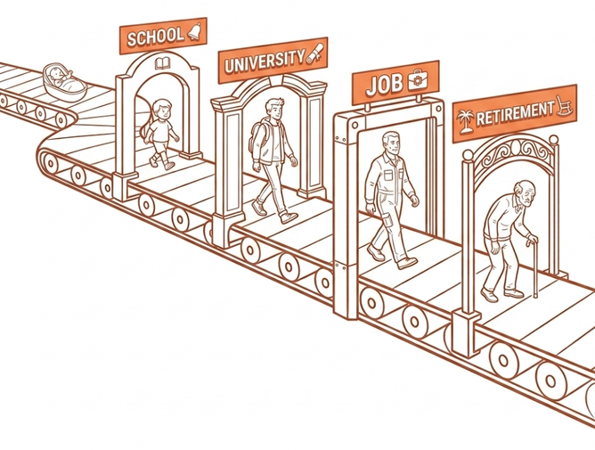

For Dreamers, Doers
& Difference-Makers
The Teenpreneur Journal: For Dreamers, Doers & Difference-Makers
Starter Edition. This is a free sample of the full Teenpreneur Journal: chapters 1, 2, 4 and 8, the Think Alongside AI bonus chapter, the Emergency Toolkit and two builder tools. For personal use. Please don’t pass it on. Your friends can download their own copy at unickorns.com.
© 2026 Milena Rudd. All rights reserved.
No part of this publication may be reproduced or transmitted in any form without prior written permission from the author, except for brief quotations used in reviews, educational settings, or personal reflection.
This journal was designed to inspire, not prescribe. It is for educational and motivational purposes only and is not a substitute for professional mental health support.
First published 2026. Printed in Poland.
ISBN: ____________________
Made for Teenpreneurs, a uNickorns programme.
unickorns.com
Start here
Your free starter edition of The Teenpreneur Journal.
Three ways to use this journal. Pick whichever feels easiest.
On a screen
Read it on a phone or tablet. Add your answers with a stylus, or in any notes app. Tap a line in the contents to jump straight to it.
On paper
Print it at home. Each page is A5, so choose “2 pages per sheet” on A4 or Letter paper, or print one page at a time to write on.
Just in your head
Pick one question and talk it through with someone you trust.
Your first 10 minutes
- Read Chapter 2, “You Are Not Lazy”, on page 00. It takes about four minutes.
- Answer the one question that pulls you most. Messy is fine.
- Try one tiny step from the Emergency Toolkit on page 00.
What’s inside
Jump in wherever you like. There is no right order.
Foreword
If you’re expecting a book full of business buzzwords and textbook definitions, this isn’t it. And if I’m honest, that’s exactly the kind of book I would’ve ignored as a teenager.
Even though I have a master’s degree in economics, I didn’t write this journal to teach you about balance sheets or inflation. Why? Because I learned the most important things about life, entrepreneurship, and myself after university, not during it.
Back then, I didn’t fit the mould (I have ADHD, dyslexia, and the kind of brain that never quite sits still). I didn’t read books for fun, only when I absolutely had to pass an exam. And even then, I’d push it to the very last minute. Books didn’t speak to me… until I found the ones that finally did.
It wasn’t the official professors who changed my life. It was the unofficial ones: Steven Bartlett, Brené Brown, Stephen Covey, Napoleon Hill, Mel Robbins, Tony Robbins, Dean Graziosi, James Clear, and many more. They were the authors who handed me the mindset shifts, habits, and courage I needed to actually start building my life, not just pass tests.
I fell in love with books (audiobooks, to be precise) because suddenly learning felt like freedom, not a chore. It felt like answers to the questions I’d been carrying for years.
That’s why this journal exists. Not just to help you “start a business,” but to help you start something even bigger: your mindset, your confidence, your awareness, your voice.
This is for the dreamers and doers. The misunderstood and underestimated. The ones who might not feel “academic” but are absolutely brilliant in their own way.
Here’s to the crazy ones. The misfits. The rebels. The troublemakers. The round pegs in the square holes. The ones who see things differently. … They push the human race forward. And while some may see them as the crazy ones, we see genius. Because the people who are crazy enough to think they can change the world are the ones who do.
Apple, Think Different, 1997
This is the journal I wish I had when I was 13. Or 17. Or even 25.
Whether or not you ever become an entrepreneur in the traditional sense, my hope is that The Teenpreneur Journal helps you realise you’re already the CEO of your own life. And that’s where the real journey begins.
This Is Not Another School Book
A quick word before we begin
Hey,
If you’re reading this, I already know one thing about you: you’re not like everyone else. Not in a cheesy “you’re so unique” kind of way, but in a real, quiet way.
Maybe you’re curious. Maybe you question things more than your teachers or parents would like. Maybe you feel like something’s off with the way the world is set up (school, life, expectations, rules) but you can’t quite put your finger on what or why.
This journal isn’t going to give you all the answers. But it might help you ask better questions. It might help you think bigger, go deeper, and notice how much power you already have, even if nobody’s ever told you that before.
It’s not about becoming a millionaire by 18. It’s not about getting perfect grades, or building a business, or impressing your parents. It’s about figuring out who you are, what actually matters to you, and how to live life in a way that feels honest, exciting, and yours.
You won’t find long to-do lists here. You will find questions. Challenges. Stories. Space to write, rant, plan, dream. And sometimes pages with nothing on them. On purpose. Because sometimes you just need space.
And if you use it, it will grow with you. Through wins, doubts, heartbreaks, ideas, boredom, and big, messy questions like:
- What am I even doing with my life?
- What if I don’t fit in?
- What if I don’t want to?
So here’s the only rule: use this however you want.
You don’t have to go in order. You don’t have to finish it in a week or a year. You don’t have to impress anyone, including yourself. Just show up.
Write when it feels good. Think when something hits different. Ignore parts that feel off. You don’t have to answer every question. Start with the one that pulls you. And keep going.
Welcome to your real diary. The one you might just carry with you through your teens, and maybe a little longer.
Let’s begin.
The Conveyor Belt Trap
Why the system wasn’t built for you.
Let’s be honest: school feels like a conveyor belt.
Everyone’s moving in the same direction, at the same speed, being told what to do, what to memorise, and when they’re allowed to ask questions.

It works for some people. Maybe even most.
But if you’ve ever felt like you’re meant for something different, something more, then you’ve probably already noticed that the system wasn’t really built for you.
Here’s the truth: much of the traditional system took shape in the industrial era, when the world needed people who could follow instructions in factories and offices. It was not designed for freedom, creativity, or entrepreneurship.
That’s why you’ve probably never been taught how to:
- Deal with self-doubt
- Create your own income
- Understand how your mind actually works
- Set real goals that mean something
Instead, you’re taught how to pass tests, follow instructions, and sit still for hours.
School also gives you real things: friends, teachers who care, and knowledge worth having. This journal is not against school. It adds what school rarely has time for.
If you’ve ever looked around and thought, “Is this it?”, you’re not alone. That question isn’t something to fear. It’s something to explore.
This chapter is about waking up to the fact that you don’t have to walk the beaten path. You can design your own. You can learn in your own way, think differently, and build a life that feels like yours, even if it looks nothing like the one they expected you to live.
But first, you need to start asking better questions.
You Are Not Lazy
You’re just unchallenged.
Let’s clear something up: you’re not lazy.
You’re not broken. You’re not “just not motivated”. You’re probably just not being challenged in the right way.
The truth is, many schools reward routine, repetition, and memorisation more than curiosity, deep thinking or independent ideas.
If you’ve ever felt like you can focus for hours on the things that interest you, but shut down when you’re forced to do something pointless, that’s not a lack of discipline. It’s proof that you’re alive.
That’s why this journal isn’t about making you “work harder”. It’s about helping you reconnect with what naturally drives you, and giving you permission to follow it.
Because once you start noticing what lights you up, you can stop trying to “fit in” and start following what actually fits you. And that’s when things really start to shift.
Your Mind Is a Tool
Not a dictator.
Have you ever felt like your thoughts take over, out of nowhere?
One moment you’re calm, the next you’re spiralling into stress, doubt or self-criticism. That’s not you being dramatic. That’s just how the teenage brain works, and you’re not alone.
This chapter will show you how to recognise that tool, understand it, and start using it on your terms.
Your Teenage Brain
Right now, your brain is developing fast. The emotional part (the amygdala) matures earlier than the logical part (the prefrontal cortex). That means your feelings often react before your thinking can catch up.
Good news? Your brain is incredibly adaptable. Every time you practise something, like calming down or learning a new skill, your brain strengthens that connection. This is called neuroplasticity. It means your brain is always growing, and you can shape how it works.
Fixed vs Growth Mindset
A fixed mindset says: “I’m just not good at this.” A growth mindset says: “I’m not good at this YET.”
That one little word makes a huge difference. Believing you can improve, and acting on it, is how people grow in any area of life.
How to Manage Emotions
- Pause and breathe. Deep breathing helps calm your body and clear your head.
- Name the feeling. Saying “I feel nervous” helps your brain sort what’s happening.
- Don’t judge it. Feeling sad or angry isn’t wrong, it’s information.
- Express it. Write, talk, move, draw. Let it out in a way that doesn’t hurt you or others.
Dealing with Negative Self-Talk
Everyone has an inner voice. Sometimes it’s helpful. Sometimes it’s cruel. That negative voice is not the truth. It’s just loud. Try these steps:
- Catch it: notice when you’re thinking something harsh.
- Question it: is this thought 100% true?
- Reframe it: “I failed” becomes “I learned something I can use next time.”
- Talk to yourself like you’d talk to a good friend.
Thoughts Are Not Facts
You are not your thoughts. You are the one observing them. That means you can question them, redirect them, or even ignore them. Think of your thoughts like clouds. They pass through. You don’t have to hold onto every single one.
Test, Fail, Repeat
The real formula for success.
Everyone wants to win. But the truth is, no one wins without first failing, a lot.
This chapter is about getting comfortable with the messy middle.
Why Failing Is Part of Winning
Failure isn’t the opposite of success. It’s part of it. Think of it like feedback. Every time something doesn’t work out, you learn something: what to do better, what not to do next time, what to try instead. Without trying and failing, you don’t grow. You just stay stuck.
Real Life Examples
- J.K. Rowling was turned down by 12 publishers before Harry Potter was accepted.
- Michael Jordan did not make the varsity basketball team in his second year of high school. He kept practising.
- Elon Musk’s early SpaceX rockets exploded. Steve Jobs was pushed out of Apple, the company he started.
- Decca Records turned down The Beatles in 1962, reportedly because guitar groups were “on the way out”.
They didn’t quit. They tested, failed, repeated, and kept moving.
The Myth of Perfection
Perfection is a trap. It makes you wait, overthink, and fear mistakes. Trying to be perfect will stop you from ever starting. But starting messy? That’s where the real progress happens.
Testing Your Ideas
Got a business idea? A passion project? A goal? Don’t wait until it’s perfect. Start small. Try it out. Get feedback. Adjust. Try again. That’s how real creators, entrepreneurs and artists do it. They test fast and learn faster.
Think Alongside AI
Use it to think better, not to think less.
AI tools can answer almost anything in seconds. That is exciting, and a little scary. The question for you isn’t whether to use AI. It’s how to use it so you get sharper, not lazier.
Three things AI can’t do for you
- Care about the problem. It doesn’t know what you notice, what bothers you, or what you want to change.
- Choose. It can list ten options. You decide which one fits your values.
- Be you. Your voice, your story and your questions are the whole point.
Five good ways to use it
- Ask it to question your idea, not just praise it.
- Ask it to explain something confusing, in simple words.
- Ask for feedback on a draft you wrote yourself.
- Brainstorm 20 bad ideas, then pick the least bad one and improve it.
- Role play a customer, a teacher or a sceptical friend, so you can practise.
Four rules to keep
- Think first. Write your own first attempt, then bring in the AI.
- Check the facts. AI can sound completely sure and be completely wrong.
- Protect your privacy. Never share your full name, address, school, or photos of other people.
- Be honest. Say when AI helped you. And check the age rules for any tool, and talk with a parent or carer about how you use it.
The “explain it” test
Emergency Doubt-Busting Toolkit
For when you’re freaking out and don’t have time to reread the whole chapter.
Slow your breath to calm your body and clear your mind.
Say it out loud: “This is self-doubt. This is fear.” Labelling it gives you power over it.
Don’t overthink. Count down from 5 and move. Action beats anxiety.
Adrenaline is fuel, not fear.
Replace “I can’t” with “I’m learning.” Be on your own team.
Ask yourself, “Why does this matter to me?” Let purpose override panic.
Don’t freeze. Text someone. Write one sentence. Show up.
It’s okay to be messy. Brave is better than perfect.
Don’t go it alone. Reach out to someone who reminds you who you are.
Posture. Music. Mantra. Get your body and brain into confidence mode.
My Commitment
Make it small. Make it real.
Talk to Real People
The fastest way to test an idea is to ask the people it is for.
People are polite. If you ask “Would you buy this?”, most will say yes. Ask about their life instead, and listen. Don’t pitch. Write down their exact words.
Five questions to ask
- Tell me about the last time you had this problem.
- What did you do about it?
- What was the hardest or most annoying part?
- Have you ever paid for anything to fix it?
- Who else should I talk to?
Who are they, and what did they say?
Who are they, and what did they say?
Who are they, and what did they say?
Patterns, surprises, and what I will change.
My Project Log
From idea to something real. One page per project. Messy is fine.
If things feel too heavy
For the days when it feels like more than a bad day.
This journal can help you notice your thoughts and feelings. It cannot replace people, and it is not a substitute for professional support.
If you feel low, anxious or hopeless for more than a couple of weeks, or the thoughts get heavy, tell someone today. You can start with one sentence: “I’m not okay and I need some help.”
Who you can talk to
- A parent, carer or another adult you trust.
- A teacher, mentor or school counsellor.
- Your doctor.
- A friend, and then an adult together.
If you need someone right now
If you are in danger or might hurt yourself, call your local emergency number straight away: 112 in the EU, 999 in the UK, 911 in the US.
- UK: Childline, 0800 1111.
- US: 988 Suicide and Crisis Lifeline. Call or text 988.
- Poland: Telefon Zaufania dla Dzieci i Młodzieży, 116 111.
- Anywhere else: findahelpline.com lists services by country.
Ready to build something real?
From the inner game to the outer game.
You’ve just done the first part: asking better questions. Teenpreneurs is where you turn them into something real, with other teens, live.
What Teenpreneurs is
- A live online programme for teenagers aged 13 to 18, in English
- 16 weekly 60 minute sessions, in small international groups of up to 12
- Real projects, guest sessions and a final Demo Day
- A Portfolio of Proof: evidence of what you made, decided and learned
- No business idea, no perfect English and no loud personality needed
The Founding Cohort
Founding Cohort: starts 12 and 13 January 2027. Tuesday or Wednesday groups, up to 12 teens each. $70 / £50 / €60 a month for four months. 14 day money back guarantee.
Free intro meeting on Zoom: 5 January 2027, 19:00 CET (18:00 UK, 13:00 New York).
![QR code]()
A note for parents
What this journal is, and how to use it with your teen.
Hello, I’m Milena. I’m a home educator of two teenagers, I have ADHD and dyslexia, and I wrote this journal because I wish I’d had it at 13.
What it is
A place for your teen to think, not a programme to complete. Short chapters, honest questions and space to write. It is not therapy and not a substitute for professional support.
How you can help
- Let them choose where to start. The question that pulls them is the right one.
- Ask what they noticed or made, not what they got right.
- Don’t ask to read it. The journal works because it is private.
- If something worries you, see “If things feel too heavy” on page 00.
About Teenpreneurs
A live online programme for ages 13 to 18. It adds to school, it doesn’t replace it. Before enrolment, every family receives the mentor’s name, role and experience, and the safeguarding rules. The Founding Cohort is led personally by me.
![QR code]()
Keep going.
This journal is the inner game. Now go and build something real.
Teenpreneurs is a live online programme for teenagers aged 13 to 18. Real projects, a small international group, and a Portfolio of Proof of what you made. No business idea needed.
![QR code to unickorns.com]()